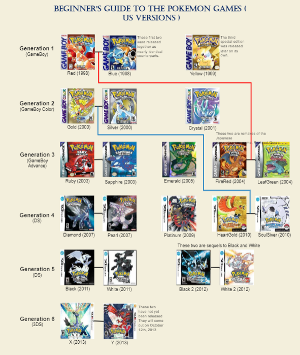

Background
History
The fan favorite game Pokémon (Short for Pocket Monsters) was founded in February 1996 by Satoshi Tajiri with licensing from Gamefreak, Nintendo and Creatures. The franchise started off with the games Pocket Monsters: Red and Green which was later adapted into Pokémon Red and Blue globally outside of Japan. It started off for Nintendo devices on the Game Boy and has been a staple to every future handheld Nintendo console.
With over 380 million copies sold and one billion mobile downloads, the Pokémon video game series is the fourth best-selling video game franchise of all time. With 1,000 episodes in 183 countries, the game of Pokémon was also adapted into a cartoon show which cycles through all the regions and new generations alongside the main character Ash Ketchum (Otherwise known as Satoshi in the Japanese games based off the creator). The franchise has also invested in a trading card game which is the highest-selling trading card game of all time with over 34 billion cards sold. There have also been a series of toys, novels, manga comics, amusement parks, and movies that have been coupled with the franchise.
